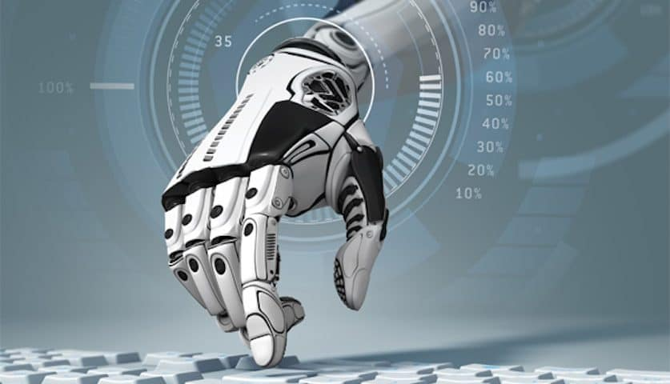

Robotics

Robotics is an interdisciplinary branch of engineering and science that includes mechanical engineering, electronics engineering, computer science, and others. The field of robotics generally involves looking at how any physical constructed technology system can perform a task or play a role in any interface or new technology.
The field of robotics has greatly advanced with several new general technological achievements. One is the rise of big data, which offers more opportunity to build programming capability into robotic systems. Another is the use of new kinds of sensors and connected devices to monitor environmental aspects like temperature, air pressure, light, motion and more.
Advantages of Robots
- ~The robots can perform the tasks faster than the humans and much more consistently and accurately. The robotic pets can help the patients with depression and they keep them active.
- ~Most of robots are automatic, so they can move without any human interference , They can entertain us and they can help us in certain tasks.
- ~The robots can be used to produce the products in the factories, to build the parts for many products such as the plane parts, the car parts and the construction supplies.
- ~Robots used to do dangerous tasks, They can adjust their parameters like their speed & time , They can act quickly, unaffected by the factors that affect the humans.
Disadvantages of Robots
- ~The robots need a supply of power, maintenance is needed to keep them running, which costs a lot.
- ~Robots can take the place of the humans in several situation, if the robots begin to replace the humans in every field, they will lead to unemployment.
- ~With the heavy application of robots , the humans may become overly dependent on the machines , losing their mental capacities.
- ~The robots are not intelligent or sentient, they can never improve the results of their jobs outside of their predefined programming, they do not think, they do not have emotions or conscience.
Applications of Robotics
- Industrial Robots
- =>These robots bring into play in an industrialized manufacturing atmosphere. Typically these are articulated arms particularly created for applications like- material handling, painting, welding and others.
- Medical Robots
- =>Robots employed in medicine and medicinal institutes. First & foremost surgical treatment robots. Also, a number of robotic directed automobiles and perhaps lifting supporters.
- Service Robots
- =>Robots that cannot be classed into any other types by practice. These could be various data collecting robots, robots prepared to exhibit technologies, robots employed for research, etc.
- Military Robots
- =>Robots brought into play in military & armed forces. This sort of robots consist of bomb discarding robots, various shipping robots, exploration drones.
- Hobby and Competition Robots
- =>Robots that is created by students. Sumo-bots, Line followers, robots prepared merely for learning, fun and robots prepared for contests.
Go to top
Back